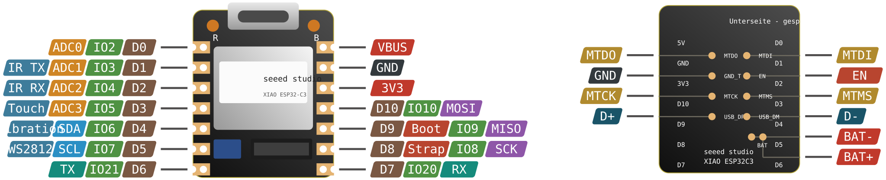

Seeed XIAO ESP32-C3 + IR Mate
eigene Firmware v2.0
ESP32-C3 · 4 MB · USB-C · Keramikantenne + u.FL

XIAO-Grundbelegung
| Label | GPIO | Alternativfunktion |
|---|---|---|
| D0 | GPIO2 | A0 |
| D1 | GPIO3 | A1 |
| D2 | GPIO4 | A2 |
| D3 | GPIO5 | A3 |
| D4 | GPIO6 | SDA |
| D5 | GPIO7 | SCL |
| D6 | GPIO21 | TX |
| D7 | GPIO20 | RX |
| D8 | GPIO8 | SCK |
| D9 | GPIO9 | MISO — Boot-Strapping |
| D10 | GPIO10 | MOSI |
Mit IR-Mate-Aufsatz — belegt, aus deinem README
| GPIO | Pin | Funktion | Pegel |
|---|---|---|---|
| GPIO3 | D1 | IR-Sender, 3× High-Power-LED | aktiv HIGH |
| GPIO4 | D2 | IR-Empfänger | aktiv LOW / invertiert |
| GPIO5 | D3 | Touch-Sensor | INPUT_PULLDOWN |
| GPIO6 | D4 | Vibrationsmotor | aktiv HIGH |
| GPIO7 | D5 | WS2812, 1 Pixel | — |
| GPIO9 | D9 | Reset-Taste | INPUT_PULLUP, aktiv LOW |
Der Reset-Taster ist kein Zufall. GPIO9 ist beim C3 der Strapping-Pin: LOW beim Einschalten bedeutet Download-Modus. Der Aufsatz nutzt genau diesen Pin doppelt — im Betrieb als Taster, beim Flashen als Boot-Wahl. Wenn ein Upload klemmt: Taste halten, Reset, loslassen.
Kein USB-HID. Der C3 hat kein USB-OTG, nur USB-CDC. Das Board kann sich nicht als Tastatur oder Maus melden — Hardware-Grenze, nicht Firmware. Wenn du HID brauchst: das S3-DevKit nehmen, oder über BLE gehen.
Firmware-Eckdaten
- AP-Fallback: SSID
XIAO-IR-Bridge, Passwort12345678,192.168.4.1 - Protokolle: OSC :8000/:9000 · Art-Net :6454 · WebSocket
/ws· MQTT · LIRC :8765 - 10 Slots für rohe IR-Signale, kein Protokoll-Decode nötig
- Reset lang > 5 s = Werksreset